项目概览
Project Chidi,
Power to Roam
LBS Smart Station Recommendation
B+C Experience Design Portfolio
Guangzhou, China (Open to Remote)
Real-time Charging State Machine
Seamless Payment Loop
Brand Visual & 3D Asset System
AIGC Workflow Integration
项目背景
驰电 Chidi
全栈主设 | LBS智能推荐与充电体验设计
全栈主设｜ C端体验 | 品牌视觉
2024
Figma | AIGC 辅助生成 | 交互原型
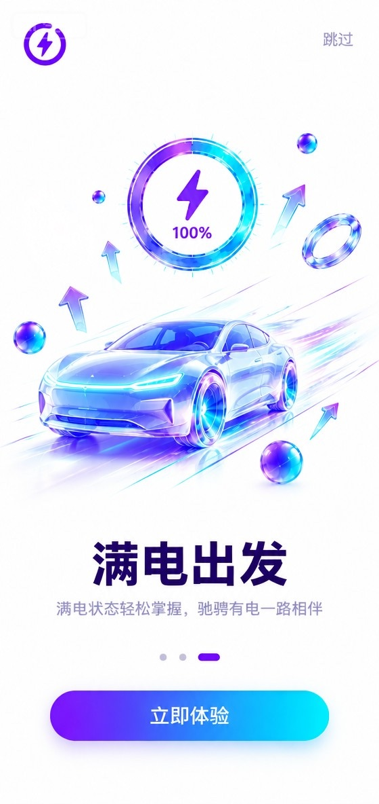
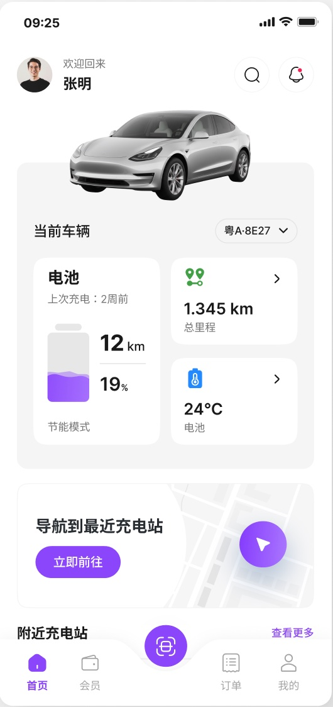
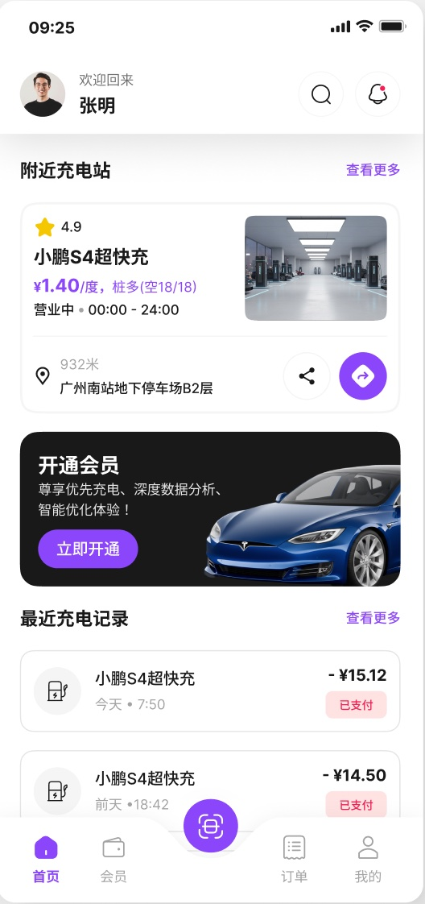
关键问题
Chidi · 新能源补能体验重塑
Find Station 找桩筛选成本高，难以判断可用性。
Unknown Status 闲忙状态不透明，排队风险难以预估。
Vague Progress 充电中进度不清晰，缺乏确定性反馈。
Broken Loop 订单与支付入口分散，未形成闭环。
+15% 详情页转化率 | +30% 平均找桩耗时 | 0 支付链路断层
品牌与系统
Brand DNA & Design System
品牌视觉
与设计系统
极光流体语言： 建立“电光紫+科技蓝”视觉体系，传递高效、清洁的未来能源感。
3D 资产沉淀： 规范 3D 车辆模型与能量光圈，建立极强的品牌记忆点。
全场景组件库： 封装地图卡片、数据看板、状态机控件等基础组件，保障多端交付一致性。
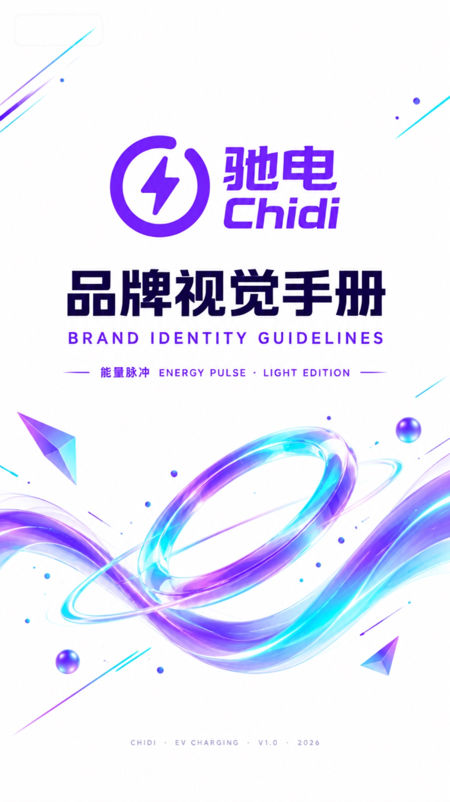
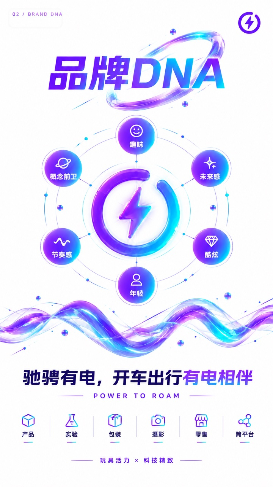
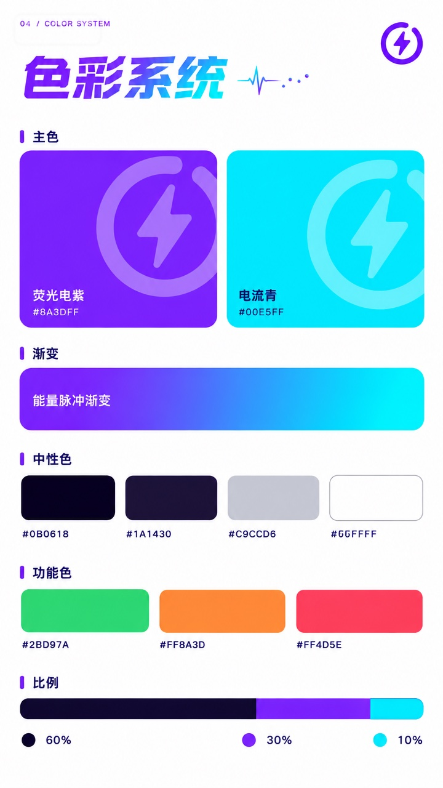
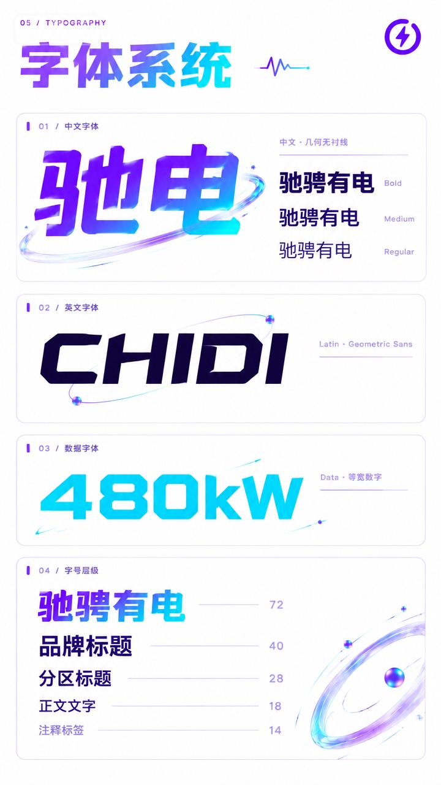
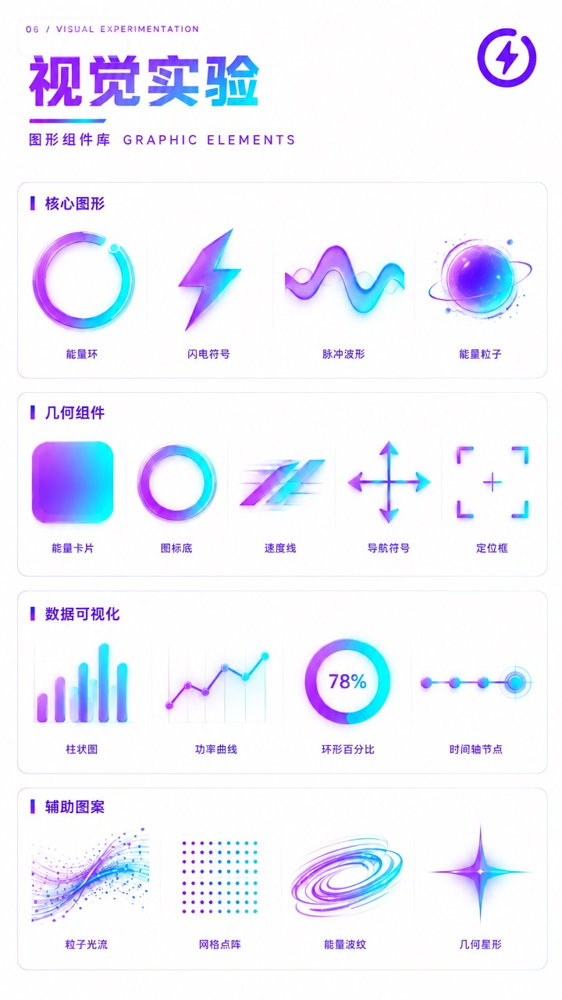
解决方案
Strategy & Solutions
核心策略
与破局
找桩与导航： 基于位置与剩余电量，主动推荐附近充电站，降低决策成本。
充电状态监控： 展示实时空闲/占用状态、功率参数，设计实时进度与异常反馈。
支付体验闭环： 打通订单与支付流程，形成从找桩到支付的完整闭环。
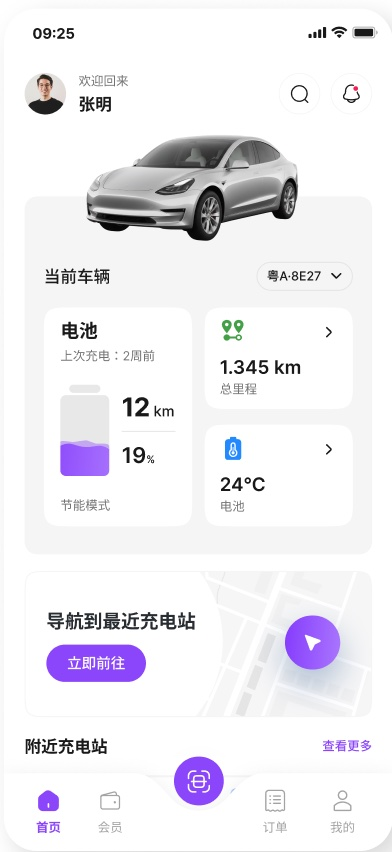
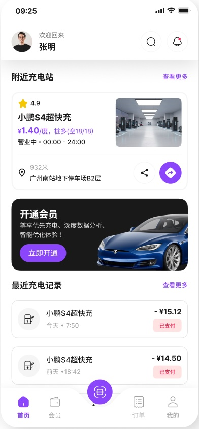
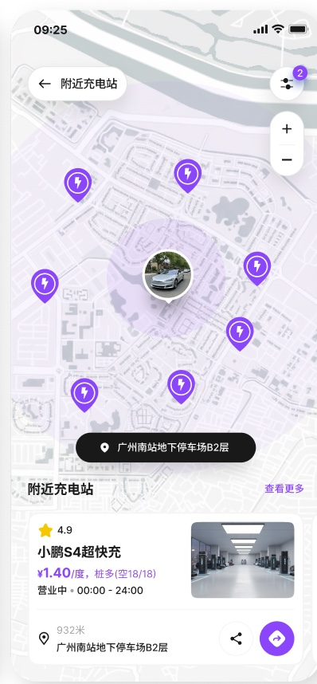
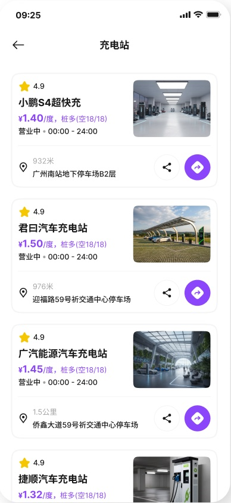
界面交付
界面交付
核心找桩与
充电链路交付
High-Fidelity UI & Full-Chain Delivery
全端适配： 覆盖找桩列表、地图模式与详情页，满足不同场景需求。
数据驱动： 清晰的闲忙趋势图，辅助车主科学规划补能时间。
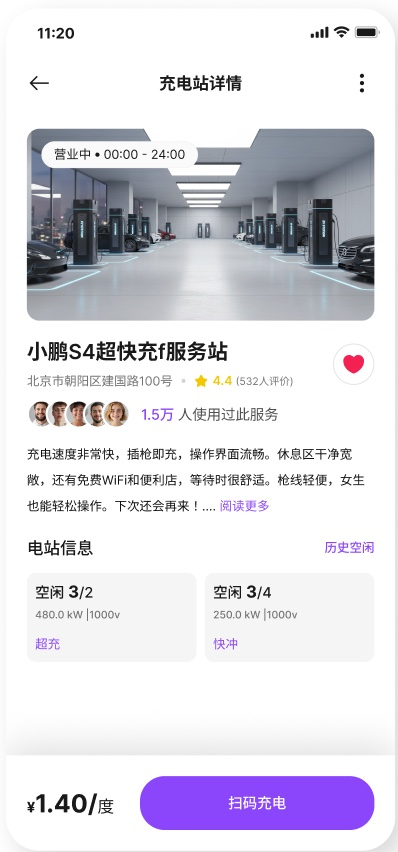
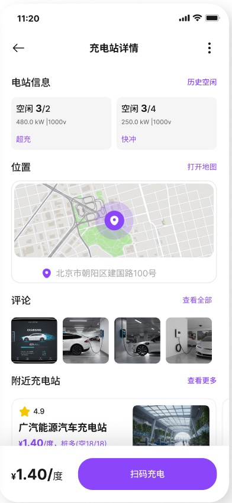
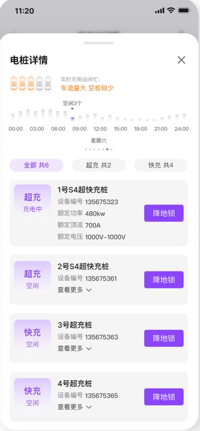
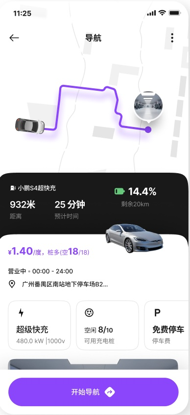
项目复盘
Payment Loop & Multi-Device UI
支付闭环与
多端体验一致性
体验降本提效： 极简的扫码与支付流程，大幅降低车主的操作门槛。
订单与历史沉淀： 清晰的订单记录与充电数据复盘，解决找桩焦虑，形成商业闭环。
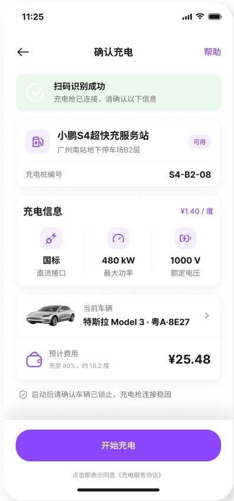
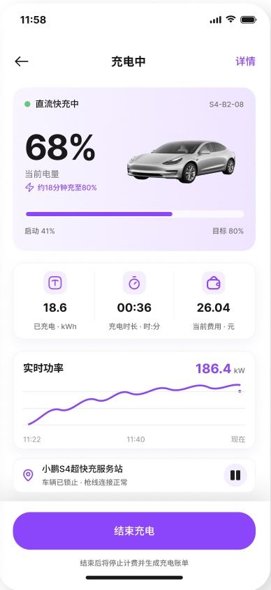
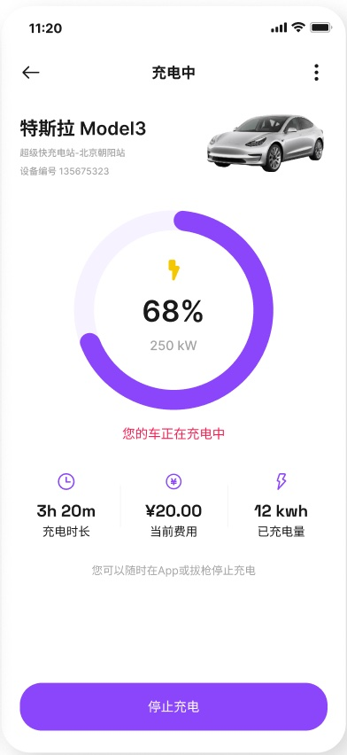
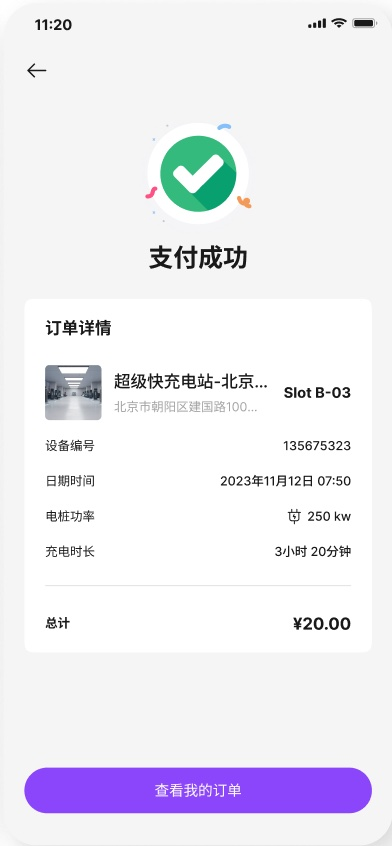